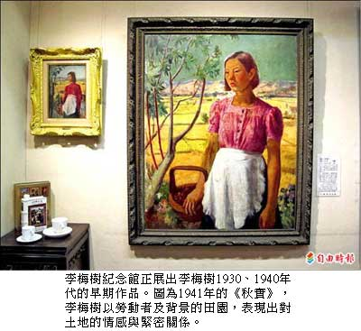

李梅樹「私房畫」 首度展出
謝佳君｜自由時報／新北都會新聞∣2012年10月19日
國立台北教育大學北師美術館正在舉辦「序曲展」，展出台灣前輩藝術家及其老師的作品，包括曾任教於東京美術學校的老師及北師校友，李梅樹的作品也在列；三峽李梅樹紀念館呼應「序曲展」，特別換展，展出多幅李梅樹在一九三○、四○年代的畫作，其中更有不少未曾展出的「私房畫」。
李梅樹紀念館執行長李景文表示，三峽重要前輩藝術家李梅樹曾至日本東京美術學校習畫，並參加多項台灣和日本展覽。紀念館這次展出四十多幅作品，其中廿多幅是大師三○及四○年代的早期畫作。
例如一九四一年的《秋實》，是第四屆總督府「無鑑查」作品，因為李梅樹的作品經常入選展出，不需經過評選即可展出；畫中以女性勞動者為主角，背景為鄉土田園，顯示當時擔任三峽農會理事長的李梅樹，對鄉土的感情與緊密關係。
而一九三三年在東美的畢業製作《裸女》，構圖和技法可追溯馬奈；一九四○年的《花與女》表現出背光的繪畫技巧，入選第四屆日本新文展；一九二九年的《台北醫院之庭》，則記錄了當年台大醫院舊建築樣式與庭園風貌。
李景文說，這次還展出李梅樹在東美向藝術家岡田三郎助習作、畢業展作品、台展及府展獲獎作品，充滿濃濃的懷舊風情；一路從北師美術館參觀至李梅樹紀念館，還能感受師徒畫風相承，薪脈相傳。另外，即日起至明年一月十三日，持北師美術館序曲展的酷卡及ＤＭ上的原點貼紙，參觀李梅樹紀念館可享門票五十元優惠。